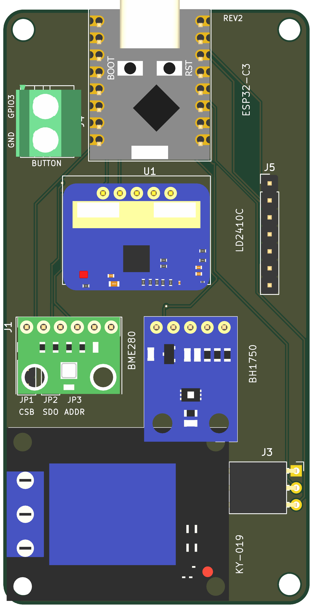

ESP32-C3 Sensor Board
Wall-mountable carrier for an ESP32-C3 Super Mini — plug-in sensor modules, relay and button terminals, USB-C on the top edge.

Variants
Relay + BME280 built
46 × 89 mm. Base design: relay socket, BME280, BH1750, LD2410C, button.
Relay + BME680 planned
46 × 89 mm. Same PCB, BME680 on the 1×6 socket.
Compact + BME280 planned
46 × 68 mm. Relay removed, GPIO4 added to the breakout row (15 holes).
Compact + BME680 planned
46 × 68 mm. No relay, BME680 sensor.
Pin map (rev2)
| Function | GPIO | Net | Where |
|---|---|---|---|
| Relay control | 4 | RELAY | J3 pin 3 |
| Button | 3 | BUTTON | J4 pin 1 |
| I²C SDA | 8 | I2C_SDA | J1/J2 + J5 |
| I²C SCL | 9 | I2C_SCL | J1/J2 + J5 |
| LD2410C RX | 20 | UART_RX | U2 pin 1 + J5 |
| LD2410C TX | 21 | UART_TX | U2 pin 2 + J5 |
| SPI CS (jumper) | 7 | SPI_CS | JP1 pin 3 + J5 |
| SPI MISO (jumper) | 5 | SPI_MISO | JP2 pin 3 + J5 |
J5: 3V3 · 5V · GND · GPIO0 · GPIO1 · GPIO2 · GPIO5 · GPIO6 · GPIO7 · GPIO10 · SDA · SCL · RX · TX (compact variants add GPIO4).
Jumpers
| Ref | Default | 1–2 | 2–3 / open |
|---|---|---|---|
| JP1 | 1–2 | CSB → 3V3, I²C mode | CSB → GPIO7, SPI mode |
| JP2 | 1–2 | SDO → GND, address 0x76 | SDO → GPIO5, SPI MISO |
| JP3 | 1–2 | ADDR → GND, 0x23 | open, 0x5C |
Buses
| Bus | Pins | Settings |
|---|---|---|
| I²C | GPIO8 / GPIO9 | 100 kHz, module pull-ups |
| UART | GPIO20 / GPIO21 | 256000 baud, 8N1 |
| SPI (optional) | SCK 9, MOSI 8, MISO 5, CS 7 | reuses SDA/SCL as MOSI/SCK |
Documents
Pin map and connectors · Bill of materials · relay-bme280 · relay-bme680 · compact-bme280 · compact-bme680